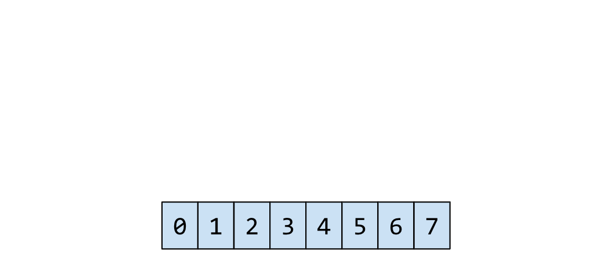

Slides
PresentationRSS student

Immutable data
A data that can't be changed once it was created


Any attempt to mutate = new copy

Is Immutability worth using it?

Copying wastes time and space :(
but...
There must be a better way...
Persistant data structures :)
Data structures which are able to save old versions of themselvesStructural sharing



(they just sit, and are)
(with a help of structural sharing)
Libraries for immutability in JS


Let's dive into Immutable.js!

Data Structures provided by Immutable.js
- List
- Map
- Stack
- Set
Immutable Map useful methods:
- Map(jsObject)
- Map.isMap(maybyMap) --> true/false
- set(key, value) --> new map
- get(key) --> value
- delete(key) --> map without key
- toJS() --> JS object
Map usage example
```javascript const { Map } = require('immutable'); let map1 = Map({a:1, b:2, c:3}); let map2 = map1.set('b', 50); console.log( map1.get('b') ); // 2 console.log( map2.get('b') ); // 50 let jsObject = map2.toJS(); console.log(jsObject); // { a: 1, b: 50, c: 3 } console.log(Map.isMap(map1)); // true console.log(Map.isMap(jsObject)); // false let mapWithoutBprop = map2.delete('b'); console.log(mapWithoutBprop.toJS()); // { a: 1, c: 3 } ```Immutable List useful methods and props:
- List(jsArray)
- List.isList(maybyList) --> true/false
- size --> list length
- set(index, value) --> new list
- delete(index) --> new list without list[index]
- insert(index, value) --> new list
- push(value) --> new list
- pop() --> new list
- toJS() --> JS object
Immutable List usage
```javascript const { List } = require('immutable'); let list1 = List([1, 2, 3, 4]); let arrayFromList = list1.toJS(); console.log(arrayFromList); // [1, 2, 3, 4] console.log(List.isList(list1)); // true console.log(List.isList(arrayFromList)); // false let list2 = list1.push(5).delete(0); console.log(list2.toJS()); // [2, 3, 4, 5] console.log(list2.size); // 4 ```Undo-Redo Demo with immutable.js
Website demo


It's that simple!!
- Create history array that contains states
- Create operation wrapper for mutations
- Wrap all mutations in operation wrapper
- Enjoy undo-redo feature!!